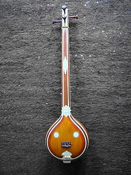
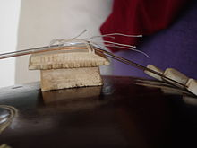
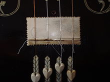

The tanpura (or tambura, tanpuri) is a long-necked plucked string instrument
found in various forms in Indian music; it does not play melody but rather
supports and sustains the melody of another instrument or singer by providing a
continuous harmonic bourdon or drone. A tanpura is not played in rhythm with the
soloist or percussionist: as the precise timing of plucking a cycle of four
strings in a continuous loop is a determinant factor in the resultant sound, it
is played unchangingly during the complete performance. The repeated cycle of
plucking all strings creates the sonic canvas on which the melody of the raga is
drawn. The combined sound of all strings, each string a fundamental tone with
its own spectrum of overtones, is a rich and vibrant, dynamic-yet-static
tone-conglomerate, due to interactive harmonic resonances that will support and
blend with the external tones sung or played by the soloist.
The name tanapura is derived from tana, referring to a musical phrase, and pura,
which means "full" or "complete". Hindustani musicians favour the term 'tanpura'
whereas Carnatic musicians say 'tambura'; 'tanpuri' is a smaller variant used
for accompanying instrumental soloists.
History:
Tanpuras form the root of the ensemble and indeed of the music itself, as the
tanpura creates an acoustic dynamic reference chord from which the ragas
(melodic modes) derive their distinctive character, color and flavor. Concerning
its history, A. D. Ranade states: "The first unambiguous reference to the
tanpura is in Sangeet Parijat (1620). It is neither mentioned by the earlier
texts nor does it find a place in sculptures". Stephen Slawek notes that by the
end of the 16th century, the tanpura had "fully developed in its modern form",
and was seen in the miniature paintings of the Mughals. Slawek further suggests
that due to structural similarity the sitar and tanpura share a related history.
An electronic tanpura, a small box that imitates the sound of a tanpura, is
often used in contemporary Indian classical music performances instead of, or in
addition to a tanpura, primarily in Carnatic music, though this practice is
controversial amongst aficionados of high level Classical music. A 2006 article
in the performing arts magazine Sruti notes: "Any model electronic tanpura
produces a sound that is necessarily artificial, which is the opposite of
artistic. The electronic substitute has no artistic value and has nothing to
teach us but repetitive unnatural boredom."

Construction:
The body shape of the tanpura somewhat resembles that of the sitar, but it has
no frets – as the strings are always plucked at their full lengths. One or more
tanpuras may be used to accompany vocalists or instrumentalists. It has four or
five (rarely six) metal strings, which are plucked one after another in a
regular pattern to create a harmonic resonance on the basic notes of a key.
Bridge and strings:
The overtone-rich sound and the audible movement in the inner resonances of tone
is achieved by applying the principle of jivari which creates a sustained
"buzzing" sound in which particular harmonics will resonate with focused
clarity. Jiva refers to "soul", that which gives life, implying that the tanpura
embodies an "animated" tone quality. To achieve this effect, the strings pass
over a table-shaped, curved-top bridge, the front of which slopes gently away
from the surface of the strings. When a string is plucked, it has an
intermittent periodical grazing contact with the bridge. When the string moves
up and down, the downward wave will touch a far point on the curve of the
bridge, and as the energy of motion of the string gradually diminishes, these
points of contact of the string on the bridge will gradually shift as well,
being a compound function of amplitude, the curvature of the bridge, pitch,
string tension and time. When the string is plucked, it has a large amplitude.
As the energy of the string's movement gradually diminishes, the contact point
of the string with the bridge slowly creeps up the slope of the bridge.
Depending on scale, tension and pitch, this can take between three and ten
seconds.

This dynamic process can be fine-tuned using a cotton thread between string and
bridge: by shifting the thread, the grazing contact sequence is shifted to a
different position on the bridge, changing the harmonic content. Every single
string produces its own cascading range of harmonics and, at the same time,
builds up a particular resonance. According to this principle, tanpuras are
attentively tuned to achieve a particular tonal shade relative to the tonal
characteristics of the raga. These more delicate aspects of tuning are directly
related to what Indian musicians call raga svaroop, which is about how
characteristic intonations are important defining aspects of a particular raga.
The tanpura's particular setup, with the cotton thread as a variable
focus-point, made it possible to explore a multitude of harmonic relations
produced by the subtle harmonic interplay in time of its four strings.
Sizes and tunings:
Tanpuras come in different sizes and pitches: larger "males", smaller "females"
for vocalists, and a yet smaller version is used for accompanying sitar or
sarod, called tamburi. These play at the octave so as not to drown out the
soloist's lower registers. Male vocalists use the biggest instruments and pitch
their tonic note (Sa), often at D, C♯ or lower, some go down to B-flat; female
singers usually a fifth higher, though these tonic notes may vary according to
the preference of the singer, as there is no absolute and fixed pitch-reference
in the Indian Classical music systems. One female singer may take her 'sa' at F,
another at A, sitariyas tune mostly around C#, sarodiyas around C, sarangiyas
vary more between D and F#, and bansuriyas mostly play from E. The male tanpura
has an open string length of approximately one metre; the female is
three-fourths of the male. The standard tuning is 5-8-8-1 (sol do' do' do) or,
in Indian sargam, pa-SA-SA-sa. For ragas that omit the fifth tone, pa, the first
string is tuned down to the natural fourth: 4-8-8-1 or Ma-sa-sa-Sa.

Some ragas require a less common tuning with shuddh or komal NI (7th major/minor), NI-sa-sa-SA or 7-8-8-1, or even with the 6th, Dha-s-s-S, major or minor. With a five-string instrument, the seventh or NI (natural minor or major 7th) can be added: PA-NI-sa-sa-SA (5-7-8-8-1)or MA-NI-sa-sa-SA (4-7-8-8-1). Both minor and major 7th harmonics are clearly distinguishable in the harmonic texture of the overall sound, so when the Ni - strings are tuned into these harmonics, the resultant sound will be perfectly harmonious. Usually the octave strings are in steel wire, and the tonic, 4th or 5th strings in brass or bronze wire. If a string will be tuned to the 6th or 7th, a steel string is advised instead.